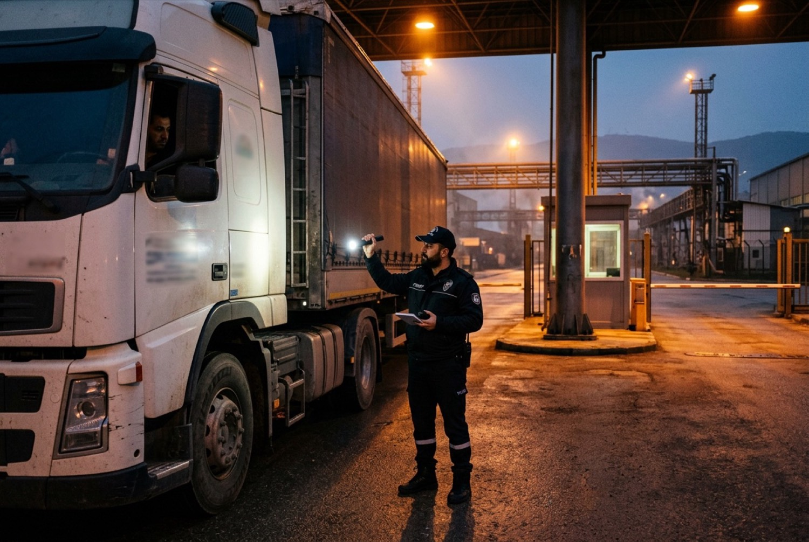
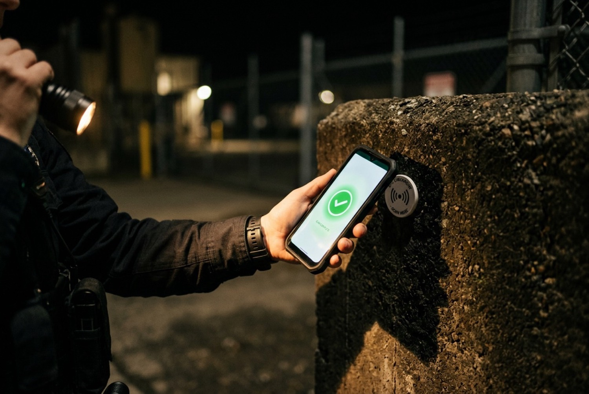

Ana sayfa / Hizmetler / Fabrika ve sanayi
Önizlemede örnek olarak Fabrika ve Sanayi Tesisi Güvenliği hazırlandı; diğer hizmetler aynı düzeni kullanır.
Fabrika ve sanayi tesisi güvenliği
Organize sanayi bölgelerinde ve müstakil üretim tesislerinde çevre güvenliği, araç ve personel girişi, kantar ve sevkiyat kontrolü. Vardiyalı üretimin ritmine göre kurulan, her nöbeti kayıtlı bir güvenlik düzeni.
Hizmet kapsamı
| Görev | Ne yapılır |
|---|---|
| Çevre güvenliği | Çit hattı ve arka sahada saatli devriye; kontrol noktaları RDN ile okutulur. |
| Araç ve personel girişi | Personel kartı kontrolü, ziyaretçi kaydı, taşeron ve servis araçlarının listeyle eşleştirilmesi. |
| Kantar ve sevkiyat | Giriş ve çıkış tartımlarının kayda geçirilmesi, irsaliye ve plaka eşleştirmesi, mühür kontrolü. |
| Vardiya düzeni | Üretim vardiyasına uyumlu devir saatleri; her devirde nöbet defteri ve brifing. |
| Kamera koordinasyonu | İzleme odasıyla telsiz bağlantısı; alarmda en yakın görevlinin yönlendirilmesi. |
| Acil durum | Yangın, iş kazası ve tahliyede ilk müdahale; acil durum ekibiyle ortak tatbikat. |

Ress güvenlik metodolojisi
Ress güvenlik metodolojisinin beş aşaması; her fabrika projesi bu sırayla ilerler.
Mevcut durum analizi
Veri toplama, saha ziyareti, giriş noktalarının ve mevcut düzenin kaydı.
Risk değerlendirmesi
Risklerin belirlenmesi ve olasılık × etki ile derecelendirilmesi.
Çözümler
Önleyici tedbir, doğrulama ve müdahale planı; kadro ve ekipman önerisi.
Uygulama
Görevli yerleştirme, mobilite ve vardiya optimizasyonu.
Kalite kontrol
Denetim, tatbikat, KPI ve SLA takibi, düzenli müşteri toplantısı.
Risk matrisi
Keşifte tespit edilen her risk olasılığı ve etkisine göre matrise yerleştirilir. Koyu hücrelerdeki riskler için önleyici tedbir teklifin parçası olur. Yandaki örnek, bir OSB üretim tesisinin keşfinden derlenmiştir.
| Risk | Önerilen tedbir |
|---|---|
| Depodan hırsızlık | Gece devriyesi, depo kapısı kontrol noktası |
| Yangın | Gece yangın turu, tatbikat, ilk müdahale eğitimi |
| Otoparkta araç hırsızlığı | Kamera koordinasyonu, plaka kaydı |
| Çevre çitinde vandalizm | Çit hattı devriyesi, aydınlatma raporu |

Dijital nöbet raporlaması
RDN Ress Dijital Nöbet, devriyenin gerçekten yapıldığını kâğıt nöbet defteri yerine kayıtla gösterir. Müşteri portalından aynı veriyi siz de görürsünüz.
- Devriye turu: okutulan ve atlanan kontrol noktaları, saatleriyle
- Olay tutanağı: fotoğraf, saat, görevli ve alınan aksiyon
- Vardiya devri: teslim eden ve alan görevli, devir notu
- Aylık hizmet raporu: PDF olarak portalda, hesap yöneticisiyle birlikte okunur
- Talep takibi: aydınlatma, kapı arızası gibi tesis talepleriniz numarayla izlenir
Örnek kadro modeli
Gebze OSB'de 3 noktalı bir üretim tesisi için hazırlanmış örnek. Kesin kadro keşif sonrasında yazılı teklifle verilir.
| Nokta | Çalışma saati | Haftalık saat | Görev türü |
|---|---|---|---|
| Ana giriş ve personel turnikesi | 7/24 | 168 | Silahsız |
| Araç kapısı ve kantar | 7/24 | 168 | Silahsız |
| Çevre devriyesi | Gece 20–08 | 84 | Silahsız, RDN okutmalı |
| Toplam | 420 saat | 11 görevli ve 1 vardiya amiri |
İlgili referans
“Türkiye geneli yaptığımız tüm projelerde geniş iş ağı ve bölge müdürlükleri bulunmasından dolayı çalışmaktan çok mutluyuz.”
Farklı illerde tesisiniz varsa
8 bölge müdürlüğü ve 81 ilde hizmet kapasitesi; her tesisin keşfini bağlı olduğu bölge müdürlüğü yapar, tüm tesisleriniz için bir hesap yöneticisi atanır.
Bölge müdürlüklerini görSık sorulan sorular
Başka bir sorunuz varsa sağ alttaki dijital asistana yazabilir ya da 0850 888 73 77'yi arayabilirsiniz.
Keşfe kim gelir?
Bağlı olduğunuz bölge müdürlüğünden bir sorumlu gelir; giriş noktalarını, çevre hattını ve mevcut kamera düzenini yerinde görür.
Mevcut güvenlik firmasından geçiş nasıl olur?
Geçiş tarihi sözleşmede belirlenir; mevcut talimatlar ve nöbet defteri teslim alınarak devir yapılır.
Kantar ve sevkiyat kontrolünü görevliniz mi yapar?
Görevli tartım kaydını, irsaliye ve plaka eşleştirmesini yapar; ticari onay sizin sevkiyat biriminizde kalır. Uyuşmazlık olduğunda tutanak tutulur ve size bildirilir.
Görevli izinli ya da raporlu olduğunda nokta boş kalır mı?
Kadro hesabında izin, rapor ve resmî tatil payı (%12) vardır. Acil personel ihtiyacında 24–48 saat içinde destek sağlanır.
Tesisiniz için kadro önerisi alın
Teklif sihirbazında tesis bilgilerini girin; bölge müdürlüğümüz keşif için size ulaşır.